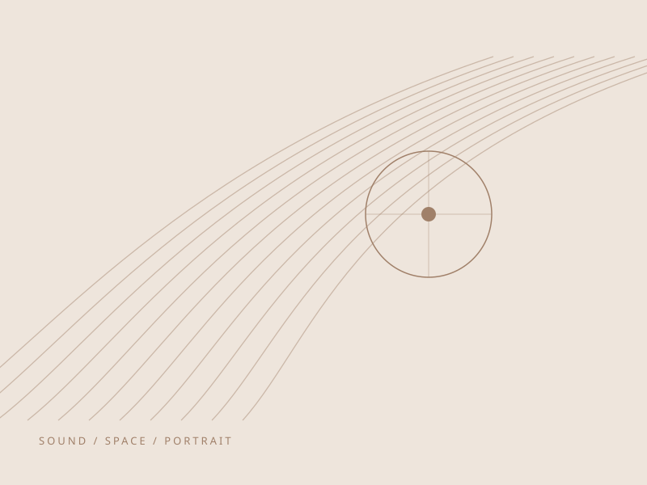

Summary
- 朗読・ボイスドラマを題材にする創作姿勢
- グループ「隣人」での詩と音楽の共同制作
- 注目の理由と、その根拠
目次を開く
読む物語が、
聴こえる風景になる。
小説と音楽のあいだで。
菅野伽琉さんは2005年山形県生まれ。大学で電子音響音楽と出会い、檜垣智也さんに作曲を学んでいる。小説と音楽の融合を目指し、ボイスドラマや朗読を題材に作曲している。
詩から始まった、共同制作。
ボンクリ・フェス2026でグループ「隣人」の作品を上演。菅野さん、寺師麻結さん、小野咲耶さん。菅野さんが詩を担当し、3人で「日常の朝」を思わせる音楽を制作した。詩の朗読を電子音響で変調する試みにも挑戦。
2026.03
大学の活動報告に、グループ「隣人」としての作品上演が掲載。
2026.09
AOBANE 2026のアクースマティック音楽コンサートに出演。
注目の理由。
言葉には意味があり、声には質感がある。その声の距離や響きが変わると、物語を受け取る感覚も変わる。朗読を作曲の素材にする菅野さんの姿勢には、文学と音響表現をつなぐ可能性があり、今後を期待する若手として期待されています。
朗読サウンドラボでは菅野さんのアクースモニウムの世界を簡単に、簡易的に再現する事ができます
朗読と空間表現を、もう少し深く ↗